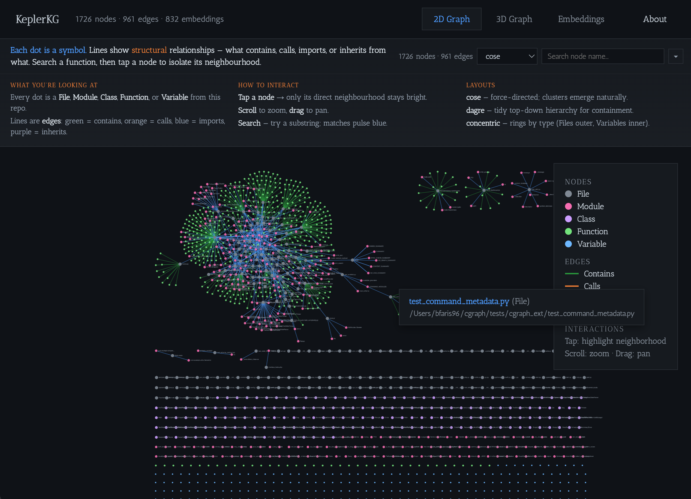
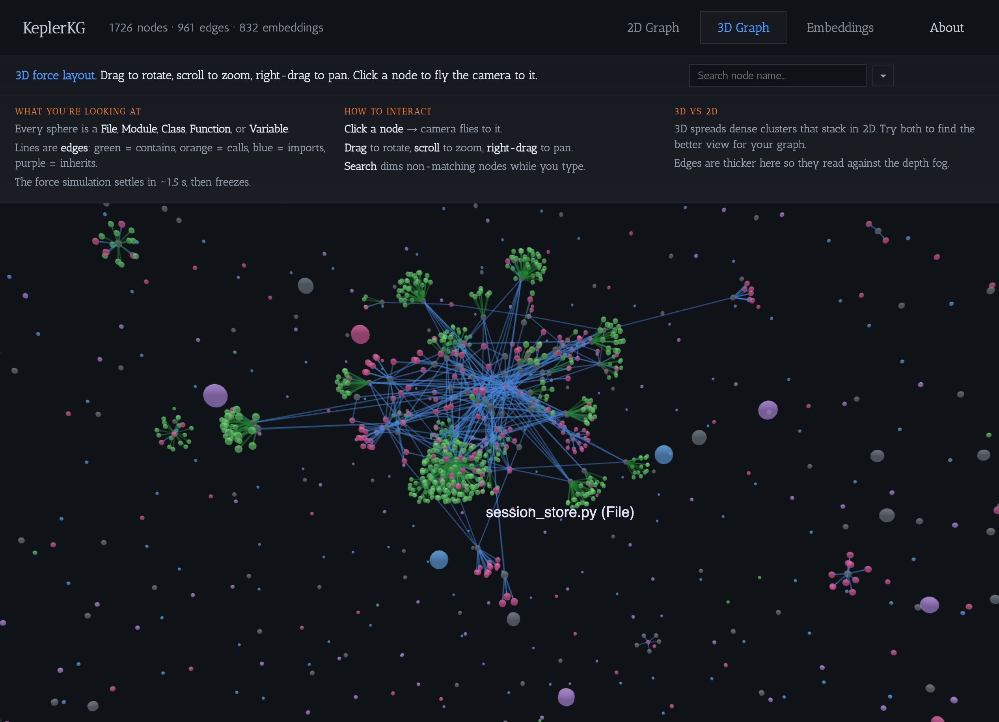
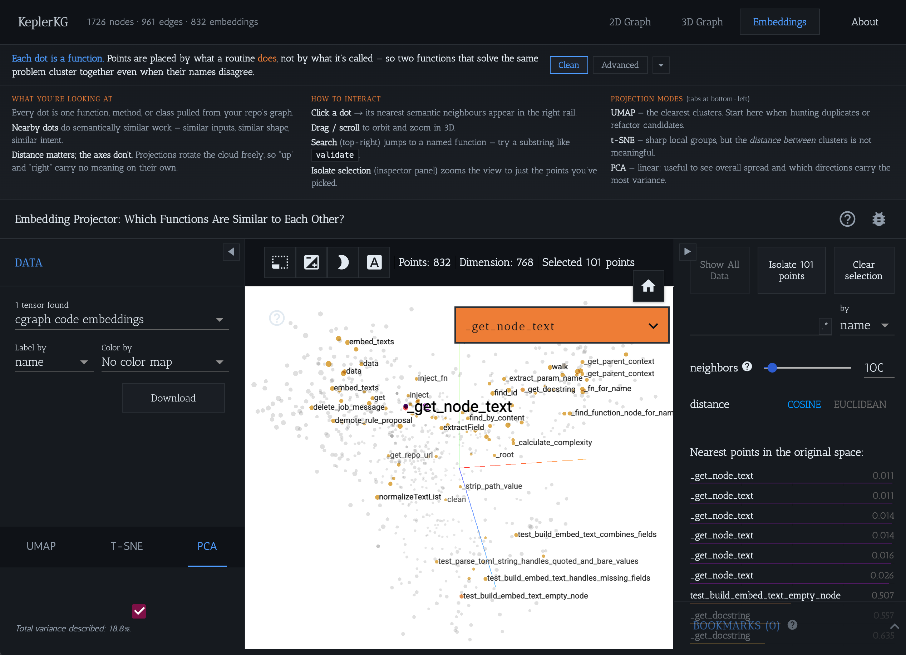

Showcase
See your codebase from every angle




KeplerKG turns codebases into structured graphs and embedding spaces that AI agents can query in hundreds of tokens instead of tens of thousands. Every command outputs machine-readable JSON — agents get precise, pre-computed context without reading entire files.
Get StartedPre-computed structural and semantic context so AI agents get exactly what they need — no file scraping, no heuristics, just structured JSON.
Parse any repo into a KuzuDB graph: files, modules, classes, functions, variables as nodes; contains, calls, imports, inherits as edges. 18 node tables, 7 relationship groups.
Batch-embed every function and class with a local code model (jina-embeddings-v2-base-code, 768-dim). HNSW indexes for fast ANN search. Swap to Voyage or OpenAI API providers if needed.
kkg context <query> returns the most relevant symbols in ~200 tokens. An agent reading raw files would burn 10-50x more context for the same answer.
kkg review-packet gives a reviewer (human or agent) the full blast radius in ~2KB of JSON — touched nodes, external callers, cross-module impact — without opening a single file.
kkg blast-radius expands a file set through the graph with transitive BFS to surface callers and callees outside your scope, plus overlap with other active work.
Every command emits structured JSON with a kind discriminator and stable schema under schemas/. Agents pipe output directly into their context — no parsing needed.



| Command | What it does |
|---|---|
| kkg index | Parse and index the repo into the KuzuDB graph |
| kkg embed | Batch-embed functions and classes (local Jina v2 or API providers) |
| kkg context <query> | Semantic search + graph neighborhood expansion |
| kkg review-packet | Reviewer JSON with blast radius and advisories |
| kkg blast-radius | Pre-lock collision check via transitive graph expansion |
| kkg sync-check | Report upstream commits not yet merged |
| kkg viz-dashboard | Three-tab browser dashboard (2D, 3D, Embeddings) |
| kkg viz-graph | Standalone 2D or 3D graph visualization |
| kkg viz-embeddings | Standalone embedding scatter plot |
| kkg export-embeddings | Export embeddings as TSV for external tools |